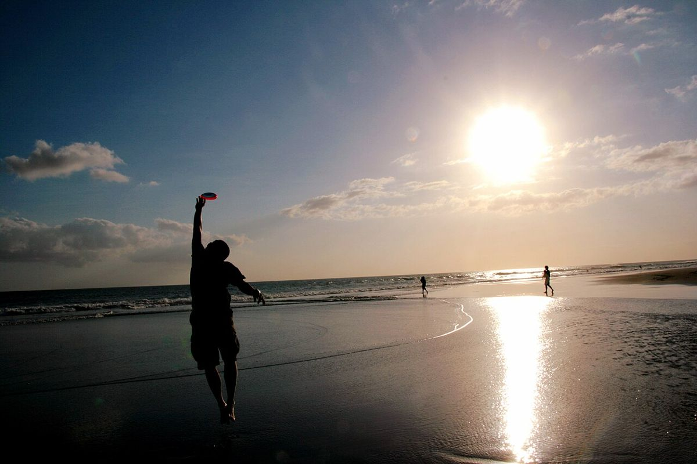

Nanny & babysitter in Seminyak
Boutique villas, beach clubs and restaurants — Seminyak is Bali's stylish base for families who like to go out.

Photo: Bonita Suraputra, CC BY 2.0
Families in Seminyak
Private-pool villas and beachfront resorts sit close to some of Bali's best restaurants. Families split days between the villa, the beach and shopping streets.
What our nannies do here
Evening babysitting while you dine or visit a beach club, pool and play time at the villa, and help with bedtime routines.
Good to know
The surf is strong along Seminyak beach — supervision near the water is essential. Many beach clubs are adults-focused in the evening, so a sitter at the villa is the easy option.
Care that fits your trip
Hourly babysitter
Dinner out, spa, a surf lesson — from 3 hours.
Full-day nanny
Beach, pool, naps and meals while you get a real holiday.
Night nanny
Settling, feeds and night wakings so you can sleep.
Newborn & baby care
Nannies experienced with babies under 12 months.
Travel nanny
Joins your family on day trips and island hops.
Hotel & villa babysitting
We come to your hotel or villa across Bali.
Weddings & events
Kids' corner and sitters for celebrations.
Long-term nanny
For expat families living in Bali.